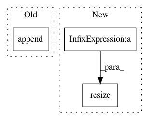

72edd97299bd73f2f4541de39aded37e543b5e22,dipy/io/dpy.py,Dpy,write_tracks,#Dpy#Any#,101
Before Change
for track in T:
self.tracks.append(track.astype(np.float32))
self.curr_pos += track.shape[0]
self.offsets.append(np.array([self.curr_pos]).astype(np.int64))
def read_track(self):
read one track each time
After Change
axis=0)
self.tracks[-tracks._data.shape[0]:] = tracks._data
self.offsets.resize(self.offsets.shape[0] + tracks._offsets.shape[0],
axis=0)
self.offsets[-tracks._offsets.shape[0]:] = \
self.offsets[-tracks._offsets.shape[0] - 1] + \
tracks._offsets + tracks._lengths
In pattern: SUPERPATTERN
Frequency: 3
Non-data size: 3
Instances
Project Name: nipy/dipy
Commit Name: 72edd97299bd73f2f4541de39aded37e543b5e22
Time: 2017-10-07
Author: garyfallidis@gmail.com
File Name: dipy/io/dpy.py
Class Name: Dpy
Method Name: write_tracks
Project Name: ilastik/ilastik
Commit Name: 8a7c79adfd36ce229b846669412c52e69ec2e674
Time: 2013-02-12
Author: kemal.eren@iwr.uni-heidelberg.de
File Name: lazyflow/operators/classifierOperators.py
Class Name: OpSegmentation
Method Name: execute
Project Name: nipy/dipy
Commit Name: 72edd97299bd73f2f4541de39aded37e543b5e22
Time: 2017-10-07
Author: garyfallidis@gmail.com
File Name: dipy/io/dpy.py
Class Name: Dpy
Method Name: write_track